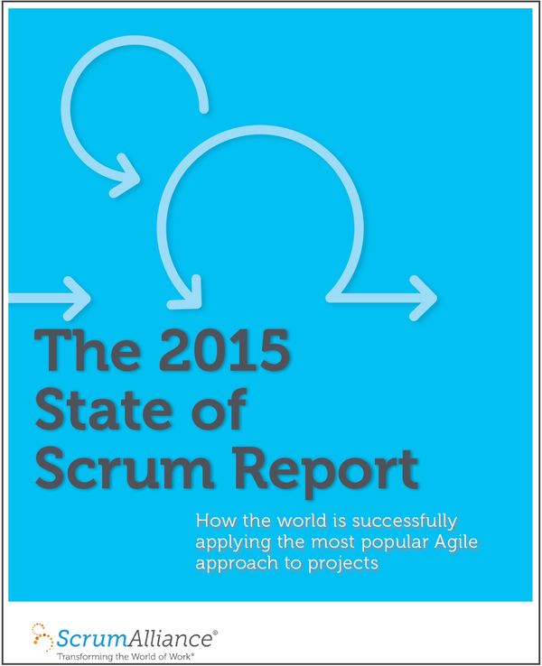

Suricato: Um sistema para
facilitar reuniões de
melhoria contínua
Lucas Takeshi R. Palma
github.com/lucaspalmaMárcio Sakamoto Shibao
github.com/mxballOrientador: Prof. Dr. Alfredo Goldman
Co-orientadora: Cecilia Fernandes
Onde tudo começou?
O que é uma retrospectiva?

Por que fazemos retrospectiva?
"Em intervalos regulares, a equipe reflete sobre como se tornar mais eficaz e então refina e ajusta seu comportamento de acordo"
Mas como nada é simples,
tinhamos problemas
Mas como nada é simples,
tinhamos problemas

Quem usa retrospectiva?
Quais problemas?
Comunicação Nenhum Relacionamento Produtividade Outros
Sincronização Descentralização
Desafios?
Ultrapassar a duração
Falta de intimidade entre
integrantes
Discussão de pouco valor
Falta de Anonimato
Agendar horario e local
Engajamento das pessoas